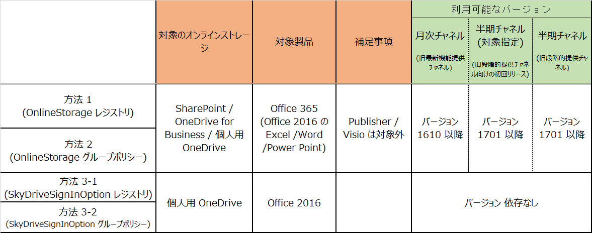

(※ 2017 年 9 月 26 日に Japan Office Support Blog に公開した情報のアーカイブです。)
こんにちは、Office サポート チームです。
今回は Office 365 ProPlus で バックステージ ビューの [ファイル] - [名前を付けて保存] などに表示される SharePoint Online 等のオンラインストレージを非表示にする方法についてご案内します。
説明
Office 365 ProPlusでは、バックステージ ビューの [ファイル] - [名前を付けて保存] 等のメニューに SharePoint Online や OneDrive のオンラインストレージが表示されます。
※バックステージビューは、その他「開く」や「上書き保存」メニューにも共通で表示されます。
Office 365 ProPlus の最新のバージョンでは、この表示をレジストリやグループポリシーにて非表示にすることが可能です。
具体的な制御方法は、後述の 【方法】 の項で記載いたしますが、各方法には利用可能なバージョンや対象となる製品がありますので、下記の一覧を参照ください。
方法 1 、方法 2 では、Office 365 ProPlus の Excel / Word /PowerPoint アプリケーションを対象に、SharePoint / OneDrive for Business / 個人用 OneDrive を制御することが可能ですが、Publisher と Visio は対象外となります。
また、方法 1 、2が利用可能なバージョンは、Current Channel (CC) は、1610 以降、 First Release for Deferred Channel (FRDC) と Deferred Channel (DC) では 1701 以降となります。
方法 3 では、Office 365 ProPlus に限らず、Office 2016 アプリケーションにてバージョンに依存なく利用可能で、個人用 OneDrive のみを制御する方法となり、この方法は、Publisher と Visio も制御可能となります。
- 各方法の対象の製品 -

目的の環境に合わせて、制御方法をご検討ください。
方法
以下に記載する方法 1 から 方法 3 を利用して、制御が可能です。
-—————–
方法 1 . レジストリで設定する
-—————–
直接レジストリに以下の値を設定することで、バックステージ ビューのオンラインストレージを非表示にすることが可能です。
キー : HKEY_CURRENT_USER\Software\Microsoft\Office\16.0\Common\Internet
名前 : OnlineStorage
種類 : DWORD
値 : 3
(値の説明)
0 = 無効 (すべての場所が表示されます)
1 = 個人向け OneDrive を非表示にします
2 = OneDrive for Business と SharePoint Online を非表示にします
3 = Microsoft のオンライン機能をすべて非表示にします
-—————–
方法 2 . グループ ポリシーを利用する
-—————–
Office 2016 のグループ ポリシーを利用して、バックステージ ビューのオンラインストレージを非表示にすることも可能です。
2-1. グループ ポリシー エディター を起動して、左側のペインで以下まで選択します。
[ユーザーの構成] - [管理用テンプレート] - [Microsoft Office 2016] - [その他]
2-2. 右側のウィンドウで [Backstage ビューの Microsoft のクラウドベースのファイルの場所を非表示にする] を選択します。
2-3. [Backstage ビューの Microsoft のクラウドベースのファイルの場所を非表示にする] の項目画面で、[有効] を選択し、オプションを [すべて非表示] として [適用] をクリックします。
このグループ ポリシーの設定は、以下のレジストリ値を追加することでも同じ効果となります。
キー: HKEY_CURRENT_USER\Software\Policies\Microsoft\Office\16.0\Common\Internet
名前 : OnlineStorage
種類 : REG_DWORD
値 : 3
-—————–
方法 3. 個人用の OneDrive のみを非表示にする方法
-—————–
以下の 2 つの方法では、個人用の OneDrive のみを非表示にし、SharePoint と OneDrive for Business は表示したままにすることが可能です。
この方法は、Office 365 ProPlus に限らず、Office Professinal Plus 2016 でも有効になります。
方法 3-1. レジストリから個人用 OneDrive のみを非表示にする
-———
以下のレジストリを設定することで、個人用の OneDrive のみが非表示になります。
キー : HKEY_CURRENT_USER\Software\Microsoft\Office\16.0\Common\General
名前 : SkyDriveSignInOption
種類 : DWORD
値 : 0
方法 3-2. グループ ポリシーから個人用 OneDrive のみを非表示にする
-———
グループポリシーから個人用の OneDrive のみ非表示にするには、以下の設定を行います。
3-2-1. グループ ポリシー エディター を起動して、左側のペインで以下まで選択します。
[ユーザーの構成] - [管理用テンプレート] - [Microsoft Office 2016] - [その他]
3-2-2. 右側のウィンドウで [OneDrive のサインインを表示する] を選択します。
3-2-3. [OneDrive のサインインを表示する] の項目画面で、[無効] を選択し [適用] をクリックします。
このグループ ポリシーの設定は、以下のレジストリ値を追加することでも同じ効果となります。
キー: HKEY_CURRENT_USER\Software\Policies\Microsoft\Office\16.0\Common\General
名前 : SkyDriveSignInOption
種類 : REG_DWORD
値 : 0
参考サイト
グループ ポリシーにつきましては、以下の弊社サイトにて詳しくご案内しております。
タイトル : グループ ポリシー管理での ADMX ファイルの使用に関するステップ バイ ステップ ガイド
URL : https://technet.microsoft.com/ja-jp/library/cc709647(v=WS.10).aspx
Office 2016 対象の管理用テンプレートは、以下からご入手いただけます。
タイトル : Office 2016 Administrative Template files (ADMX/ADML) and Office Customization Tool
URL : https://www.microsoft.com/en-us/download/details.aspx?id=49030
* 注意事項
本情報の内容 (添付文書、リンク先などを含む) は、作成日時点でのものであり、予告なく変更される場合があります。